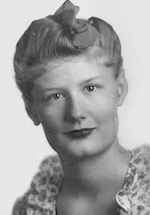

Blackwell-Rosenbluth Award
Call for award nominations
Dear all,
It is with great pleasure that we announce the Blackwell-Rosenbluth Award by j-ISBA, a recently established award for junior researchers in different areas of Bayesian statistics. The award aims at recognizing outstanding junior Bayesian researchers based on their overall contribution to the field and to the community. There will be six winners in total who will be invited to present their work in two special events of the Junior Bayes Beyond the Borders (JB^3) webinar series and receive three years of free ISBA and j-ISBA membership.
ISBA proudly has a wide geographical diversity among its members. To encourage scientific exchange and strengthen research connections between geographies, three prizes will be awarded to researchers based in time zones UTC+0 to UTC+13 [e.g. Africa + Asia + Europe + Oceania] and three to those based in UTC-12 to UTC-1 [e.g. North America + South America].
We welcome nominations of junior researchers working in the broad spectrum of topics in Bayesian statistics, including but not limited to methods, theory, computation, machine learning, data science, biostatistics, econometrics, industrial statistics, environmental science, and software.
There will be two scientific committees: one representing UTC- and the other representing UTC+, each consisting of members from their respective regions based on their professional affiliations. These committees are tasked with evaluating candidates for the award. The UTC- committee will evaluate submissions from UTC+ and vice versa.
Why Blackwell-Rosenbluth
The award is named after David H. Blackwell and Arianna W. Rosenbluth for their groundbreaking works that lie at the foundation of modern Bayesian statistical theory and computation. They represent important role models for new researchers in Bayesian statistics.
David Harold Blackwell
Born on April 24, 1919, Blackwell excelled in mathematics from an early age. He earned his doctoral degree from the University of Illinois at Urbana-Champaign under the supervision of Joseph L. Doob in 1941. He had a distinguished career, becoming a founding member in 1955 of the newly established Department of Statistics at University California, Berkeley. In 1965, he became the first African American to be elected member of the U.S. National Academy of Sciences and was awarded the John von Neumann Theory Prize in 1979. In addition to his seminal contributions to Bayesian inference, decision theory, game theory, sequential analysis and renewal theory, he also wrote one of the first textbooks in Bayesian statistics (Basic Statistics, McGraw-Hill, 1969).
Arianna Wright Rosenbluth
Born on September 15, 1927, Arianna Wright Rosenbluth showed an affinity for sciences from early childhood. She completed her doctoral work under the supervision of a future Nobel Laureate, John Van Vleck, in 1949, making her the fifth woman to earn a Ph.D. in Physics from Harvard. Later, as a coauthor of the seminal 1953 paper introducing the Metropolis algorithm, Rosenbluth almost single-handedly implemented the algorithm on the MANIAC I hardware at the Los Alamos Scientific Laboratory. This made her the first person to ever implement the Markov chain Monte Carlo method when sophisticated programming tools were still years away, and the program had to be written in strings of 1’s and 0’s.
Eligibility and Application Procedure
Ph.D. students or early career researchers who obtained their PhD after January 1, 2019 are eligible for nomination. Candidates who were nominated in previous years may be nominated again if they received their Ph.D. after January 1, 2019. In exceptional cases, applicants who are more than five years past their Ph.D. may still be considered if they experienced a significant career break within five years of earning their degree (such as breaks due to illness, caring for a sick family member, pregnancy-related leave, or parental leave). Candidates may inquire about their eligibility, particularly if they have taken career breaks, by sending an email to jisba.section@gmail.com. A nomination may come from any ISBA member, including the nominee themselves. A nomination is to be submitted electronically and should contain:
- Nominating letter in support of the candidate
- CV of the candidate
- One manuscript or alternate form of exposition (e.g. software documentation) of scientific work most representative of the nominee’s achievements; the submitted work should also be available as publication or in a public repository such as arXiv, bioRxiv, CRAN, Bioconductor or GitHub.
Submit here.
If you are unable to use Google Forms, please email your nomination to jisba.section@gmail.com.
Timeline
The deadline for submission is June 15, 2024 July 1, 2024. Winners will be announced in September.